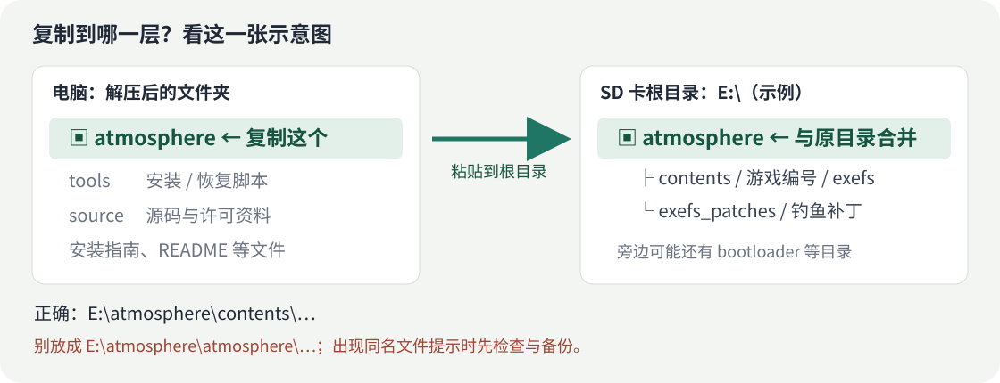

Switch 星露谷物语 Mod
跟着这份指南安装
跳过钓鱼小游戏 · 自动捕获本竿随机宝箱 · UI 信息提示
游戏 1.6.15.3 指定构建需要大气层环境不绑定 SD 卡或读卡器公开预览版：钓鱼和普通随机宝箱已有一台续航版主机的成功反馈；UI 0.1.5 生日修复尚待真机复测，其他机型未逐一验证。
先确认：这份包适不适合你的游戏？
需要运行大气层的 Switch，游戏版本为 1.6.15.3。还应核对实际游戏构建：
| 检查项 | 对应值 |
|---|---|
| Title ID / Program ID | 0100E65002BB8000 |
| Build ID 前 16 位 | A5C617C14A7F3F66（仅用于初步对照） |
展开查看完整 Build ID 和核对说明
A5C617C14A7F3F6620B3BC8136965A4822D32B9C000000000000000000000000
已有 EdiZon 时，可在游戏运行时查看 Program ID 和 Build ID。部分工具只显示前 16 位；完整核对可使用自行导出的 ExeFS main，通过安装器的 -GameMain 选项检查。
安装器不能从加密的 SD 游戏目录直接读取实际 Build ID；不提供导出的 main 时，报告会保留“未核对”状态。游戏版本号相同也不能替代完整构建核对。编号不符时请等待适配，改 IPS 文件名不能完成适配。
方法一：Windows 安装器
推荐使用。会检查冲突、备份同名文件，并核对复制结果。兼容 Windows PowerShell 5.1 / 7。
关机、取卡、完整解压
退出游戏并关闭 Switch，再取出 SD 卡接到电脑。把下载的 ZIP 完整解压到电脑文件夹。
解压后能看到 atmosphere、tools、source 和本指南。不要在压缩包里直接运行脚本。
找到 SD 卡盘符
打开“此电脑”，找到 SD 卡，例如 E:。双击后第一层应已有 atmosphere 文件夹，这一层就是“SD 卡根目录”。
下面的 E: 只是示例，请换成自己的实际盘符。
打开 PowerShell，先做检查
回到电脑上的解压文件夹，点击资源管理器上方的地址栏，输入 powershell.exe 并按回车。在打开的窗口里粘贴下面一行，改好盘符，再按回车：
powershell -NoProfile -ExecutionPolicy Bypass -File .\tools\Install.ps1 -SdRoot "E:\" -CheckOnly
看到 "status": "CHECK_ONLY" 表示预检查通过，这一步还没有安装。
“Game Build ID was NOT read…” 表示未读取实际游戏 Build ID，不代表已经确认游戏构建。出现报错并停止时，先处理原因，不要强制覆盖。
正式安装
预检查通过、游戏构建已确认后，再运行这一行：
powershell -NoProfile -ExecutionPolicy Bypass -File .\tools\Install.ps1 -SdRoot "E:\"
看到 "status": "INSTALLED_AND_VERIFIED"，表示文件复制并读回校验成功。
输出中的 backup 是备份位置，通常在电脑上解压目录的 outputs/backups/。保留解压目录和备份。它只备份本包涉及的同名文件，不导出当前游戏存档。
安全弹出，再插回 Switch
在电脑上安全弹出 SD 卡，插回关机状态的 Switch，再启动大气层和游戏。按下面的方法确认功能生效。
方法二：手动复制到正确位置
适合知道如何检查 Mod 冲突、备份文件的玩家。可以使用任何支持复制文件的电脑系统。

- 关机取卡；核对游戏构建，检查其他 Mod，并备份将被覆盖的同名文件。
- 把解压目录里的 atmosphere 文件夹复制到 SD 卡根目录，合并文件夹。
- 正确位置为
E:/atmosphere/contents/...和E:/atmosphere/exefs_patches/...。 - 安全弹出，插卡开机。
出现替换提示，别一律选“全部替换”。确认是本包旧版的同名文件，备份后才能升级；来自其他整合包或不明来源的文件，先核对。不要删除整张卡的 atmosphere 文件夹。
展开查看本包实际写入的三个文件
atmosphere/contents/0100E65002BB8000/exefs/subsdk9 atmosphere/contents/0100E65002BB8000/exefs/main.npdm atmosphere/exefs_patches/StardewInstantCatch/ A5C617C14A7F3F6620B3BC8136965A4822D32B9C000000000000000000000000.ips
前两项是配套 UI 文件；最后一个 IPS 同时包含钓鱼与宝箱功能。不要覆盖其他 Mod 的模块或权限文件。
进游戏后，怎么知道装好了？
| 功能 | 这样试 |
|---|---|
| 钓鱼 | 正常抛竿、等待咬钩并提竿后，直接进入收鱼流程，不再操作绿色条小游戏。 |
| 宝箱 | 这一竿原版随机生成了宝箱，才会随鱼一起捕获，随后正常开箱领物品。不是每一竿都有宝箱。 |
| UI 设置 | 进入存档并打开背包所在的游戏菜单，再按下面的组合键。 |
小锤子目前有手柄无法选中的已知问题，请使用组合键。R3 保留原版聊天功能。
遇到问题，先看这里
脚本说有其他模块 / NPDM / 同构建补丁
这是冲突检查阻止了覆盖。先核对已有 Mod，或把错误信息交给发布者，不要靠改名字或强制覆盖解决。
文件复制成功，但游戏里没变化
核对实际 Build ID、是否多套了一层文件夹，以及大气层是否正常启用游戏覆盖。复制成功不能代替游戏加载验证。
一直没有拿到宝箱
宝箱出现概率保持原版。只有本来就生成宝箱的一竿才会自动捕获，几竿没有宝箱不代表安装失败。
游戏报错，想恢复旧文件
退出游戏并关机取卡，在电脑上的解压目录打开 PowerShell，把下面的盘符和备份目录改成安装报告里的实际位置。
powershell -NoProfile -ExecutionPolicy Bypass -File .\tools\Restore.ps1 -SdRoot "E:\" -BackupDirectory "实际备份目录" -CheckOnly powershell -NoProfile -ExecutionPolicy Bypass -File .\tools\Restore.ps1 -SdRoot "E:\" -BackupDirectory "实际备份目录"
恢复旧文件，或移除本次新加的文件。安装后又被修改过的文件会被保护，脚本不会盲目覆盖。手动安装则恢复自己的同名备份，不要删除整个 atmosphere。
反馈时应该提供什么？
游戏版本、完整 Build ID、大气层 / 固件版本、已有其他 Mod、出错前做了什么，以及对应报错或日志。日志分享前检查私人信息。